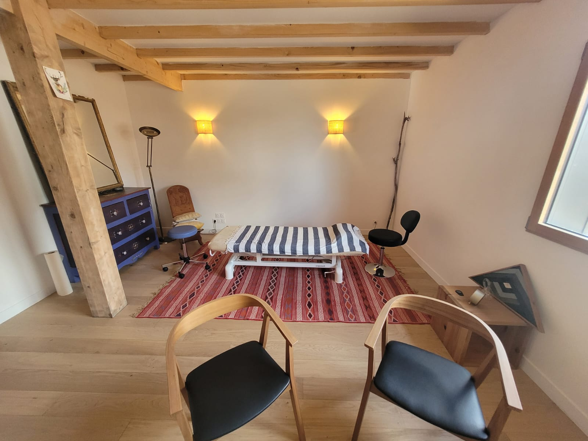

À Nantes

6 Rue des Ajoncs d'Or, 44700 Orvault
Présence
- Mercredi
- Jeudi
- Samedi
À Crac'h

1 rue Germaine Tillion, 56950 Crac'h
Présence
- Lundi
- Mardi
- Mercredi
À Ploëmel
4 rue de la Gare, 56400 Ploëmel
Présence
- Vendredi
- Samedi
Présence

Présence
4 rue de la Gare, 56400 Ploëmel
Présence
L’étiomédecine est une méthode thérapeutique visant à soulager les mémoires de souffrance, innées ou acquises, à travers lesquelles les individus appréhendent la vie. Ces mémoires agissent comme des filtres qui distordent notre regard sur l’existence. Le soin contribue à « décloisonner » le patient, qui retrouve alors davantage de liberté pour aborder la vie avec plus de justesse et, potentiellement, se trouver.
Le soin en étiomédecine ne repose ni sur un protocole standardisé ni sur des conseils. Il consiste à accueillir, sans jugement, le vécu singulier de chaque patient. Le praticien l'accompagne à recontacter les ressentis physiques et émotionnels liés à son histoire afin de libérer les mémoires concernées, en s'appuyant notamment sur les réactions du pouls.
C'est le partage du ressenti, rendu possible par la présence empathique du thérapeute, qui permet la libération de la charge de souffrance. Les symptômes, physiques comme psychiques, ainsi que les fonctionnements qui en découlent, peuvent alors progressivement se dissiper. La souffrance ne se résout pas par l'explication, mais par le partage du ressenti.
Nous sentir reconnus nous libère profondément et durablement.
Pour en savoir plus sur l’étio, son fonctionnement ou son champ d’action, voir cet article.

Ostéopathe de formation, je n’ai jamais été pleinement satisfait des concepts mécanistes enseignés, ils me semblaient décrire le fonctionnement du corps sans réellement rendre compte de la complexité de l'être humain. Très tôt, j’ai ressenti le besoin d’explorer autrement, par le ressenti, en m’affranchissant des cadres et des manuels. Un premier déclic survient lors d’une mission humanitaire en Amérique latine. Confronté à des vécus lourds, je prends alors la mesure de mes limites et du manque d’outils adaptés. Une brèche s’ouvre, je m’y engouffre.
C’est à mon retour que je découvre l’étiomédecine, en cherchant à résoudre des problèmes de santé récurrents. D’abord déstabilisé, je vois peu à peu les verrous, tant physiques que psychoaffectifs, céder. Comme une percée de lumière dans un ciel d’orage : j’avais trouvé.
N'ayant jamais su nier les évidences, je me forme dès 2009 auprès de Max Bernardeau. Très vite, une décision s'impose : l'étiomédecine deviendra l'unique outil de ma pratique en cabinet.
Pendant quinze ans, je l'accompagne comme assistant au sein de ses formations. À son départ à la retraite, il me transmet le relais afin d'assurer la continuité de cet enseignement. J'exerce aujourd'hui comme praticien certifié et formateur en étiomédecine et j’espère pouvoir humblement redonner ce qui m’a été transmis.
DIPLÔMÉ OSTÉOPATHE DO en 2008
à IDHEO NANTES
OSTÉOPATHIE BIODYNAMIQUE
avec B. JOSSE
OSTÉOPATHIE TISSULAIRE
avec P. TRICOT
PHYSIOLOGIE ÉVOLUTIONNISTE
avec M. GIRARDIN
ÉTIOMÉDECINE en 2009
avec M. BERNARDEAU
6 Rue des Ajoncs d'Or, 44700 Orvault
Présence
1 rue Germaine Tillion, 56950 Crac'h
Présence
4 rue de la Gare, 56400 Ploëmel
Présence
davidjegou.etio@gmail.com
Tarif des consultations : 75 €.
Site de la formation en étiomédecine
Site de référencement des praticiens certifiés